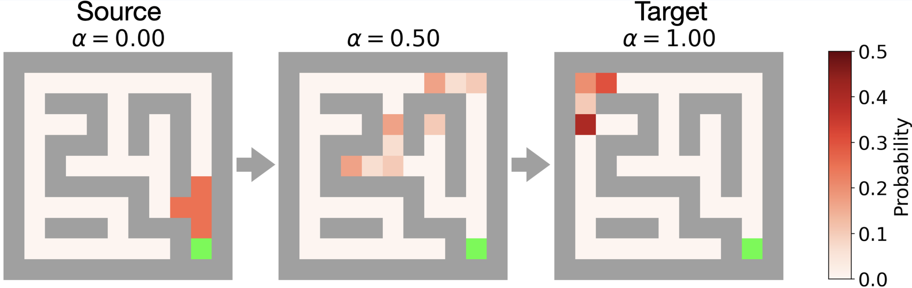
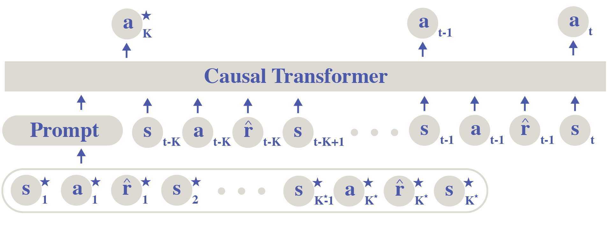
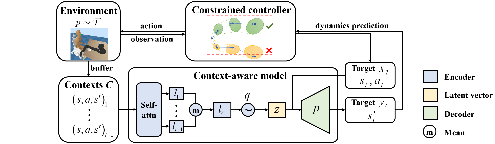
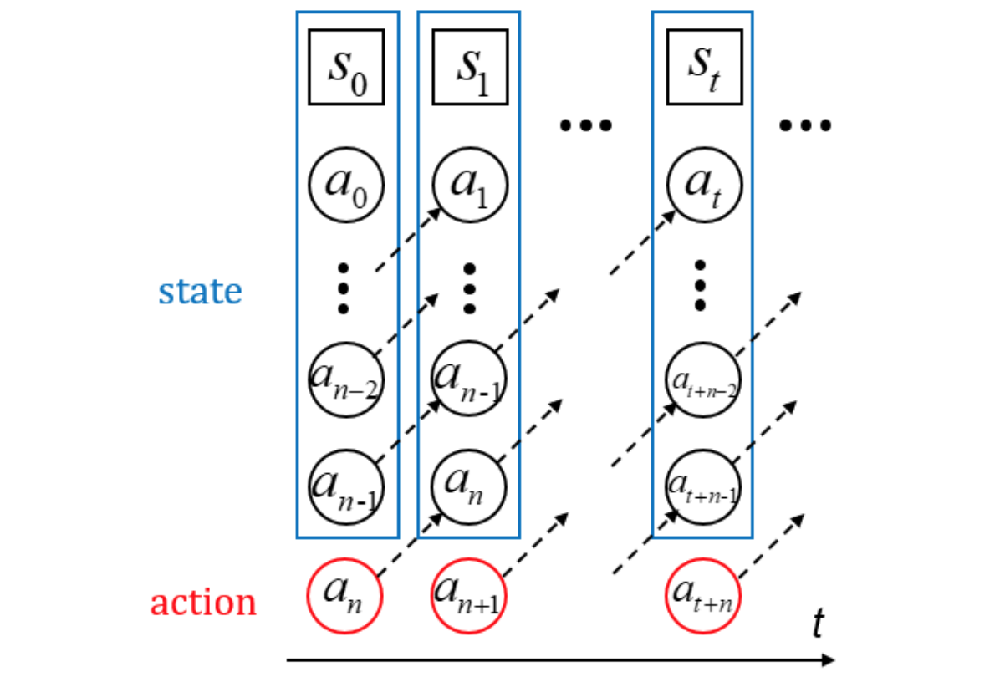
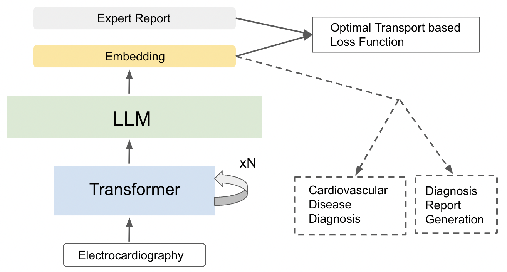
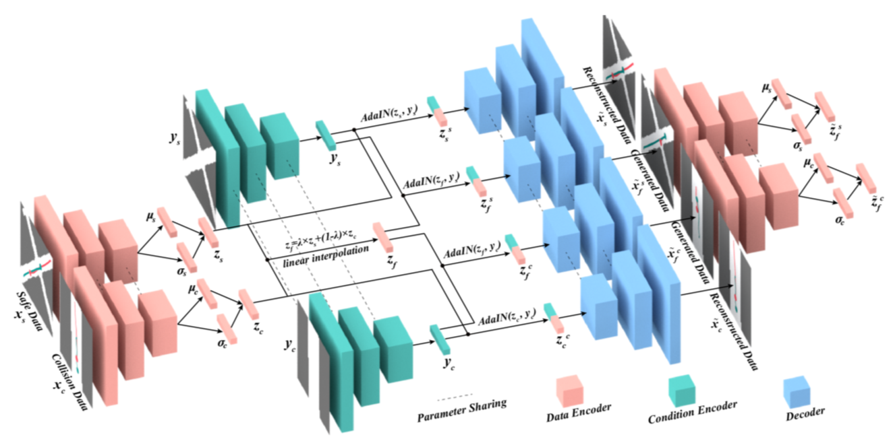
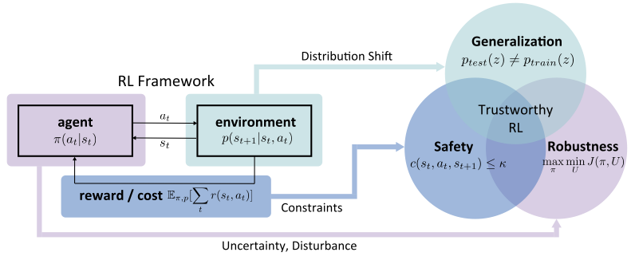
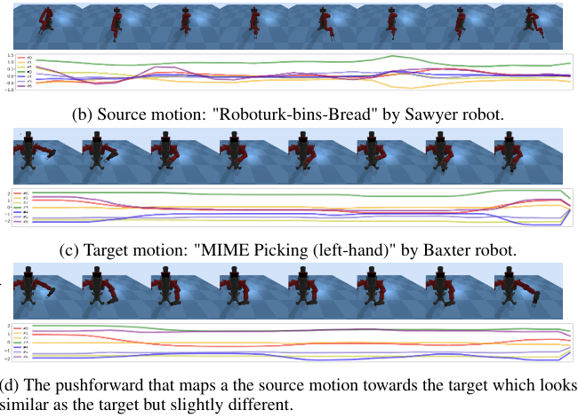
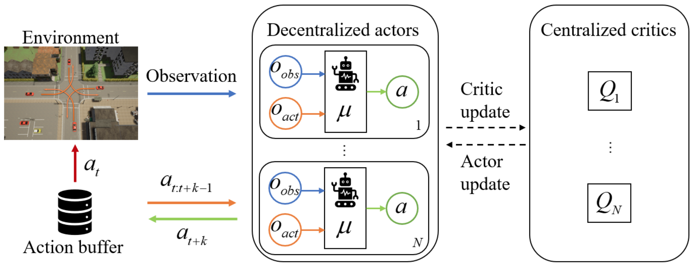

|
I am a fourth-year Ph. D. student advised by Ding Zhao (SafeAI Lab) at Carnegie Mellon University. I am also fortunate to work closely with Chuang Gan, Fei Fang, Henry Lam, and Bo Li. My research interests lie at the interface of robotics, reinforcement learning, imitation learning, and cognitive science. I am passionate about improving robots' generalizability and robustness, especially in human-in-the-loop multi-agent systems. Before joining CMU, I received my Master degree in Robotics from LCSR at Johns Hopkins University, supervised by Prof. Gregory S. Chirikjian. I received my Bachelor of Engineering from the School of Vehicle and Mobility and Bachelor of Management from the School of Economics and Management at Tsinghua University. Email / CV (last updated: May 2023) / Google Scholar / Github |
{kind=link}
News
| 2023/05 - Selected for the 2023 cohort of the RSS Pioneers Workshop! |
| 2023/02 - Selected as Rising Stars in Computational and Data Sciences by UT Austin! |
| 2023/02 - I joined Google Robotics as a Student Researcher. |
| 2023/01 - Our work about bridging ECG and NLP got accepted to EACL 2023. |
| 2023/01 - Our work about efficient online adaptation of transformer-based agents got accepted to ICLR 2023. |
| 2023/01 - Our work about group distributionally robust RL got accepted to AISTATS 2023. |
| 2022/09 - Our work about domain adaptation in curriculum RL got accepted to NuerIPS 2022. |
| 2022/06 - Our work on accelerated policy evaluation in the presence of rare events got accepted to IROS 2022. |
| 2022/05 - I joined MIT-IBM Watson AI Lab as a research intern. |
| 2022/05 - Our work on policy generalization with offline data got accepted to ICML 2022. |
| 2022/04 - Our work about a novel framework for robust RL got accepted to IJCAI 2022. |
Selected Publications

|
The Eleventh International Conference on Learning Representations (ICLR), 2023 [openreview] |

|
The 26th International Conference on Artificial Intelligence and Statistics, (AISTATS), 2023 Abridged in ICML 2022 workshop on Principles of Distribution Shift. Abridged in ICRA 2022 the Fresh Perspectives on the Future of Autonomous Driving Workshop. [paper] |
|  |
The 36th Conference on Neural Information Processing Systems, (NeurIPS), 2022 [paper] |
|  |
Thirty-ninth International Conference on Machine Learning (ICML), 2022 [webpage] [paper] [code] |

|
IEEE/RSJ International Conference on Intelligent Robots and Systems (IROS), 2022 Abridged in ICLR 2021 Workshop in Security and Safety in Machine Learning Systems. [arXiv] [bibtex] [workshop] [poster] |

|
International Joint Conference on Artificial Intelligence (IJCAI), 2022 [arXiv] [bibtex] |
|  |
IEEE International Conference on Robotics and Automation (ICRA), 2021 [arXiv] [bibtex] |

|
Thirty-fourth Conference on Neural Information Processing Systems (NeurIPS), 2020 [video] [arXiv] [code] [bibtex] |
|  |
Neurocomputing, 2021 [arXiv] [code] [bibtex] |
|  |
The 17th Conference of the European Chapter of the Association for Computational Linguistics (EACL), 2023 [paper] |
|  |
International Conference on Robotics and Automation (ICRA), 2020 [arXiv] [code] [bibtex] |
Preprints
|  |
Preprint, under review. * indicates equal contribution. [paper] |

|
Preprint, under review. * indicates equal contribution. [paper] |
|  |
Preprint, under review Abridged in AAAI OT-SDM 2022 workshop (spotlight) [arXiv] [code] [bibtex] |
|  |
Preprint, under review [arXiv] [code] [bibtex] |
Teaching
| Teaching Assistant of 24-784 Trustworthy Intelligent Autonomy, Carnegie Mellon University, Spring 2023 |
| Teaching Assistant of 24-677 Linear Control Systems, Carnegie Mellon University, Fall 2021 |
| Teaching Assistant of EN.530.646 Robot Devices, Kinematics, Dynamics, and Control, Johns Hopkins University, Spring 2019 |
| Teaching Assistant of EN.530.645 Kinematics, Johns Hopkins University, Fall 2018 |
Service
| Conference Reviewer: ICCV 2023, CVPR 2023, ICLR 2023, AISTATS 2023, NeurIPS 2022, ICML 2022-2023, AAAI 2022 |
| Journal Reviewer: T-ITS |
| Program Committee: TSRML, NeurIPS 2022 |